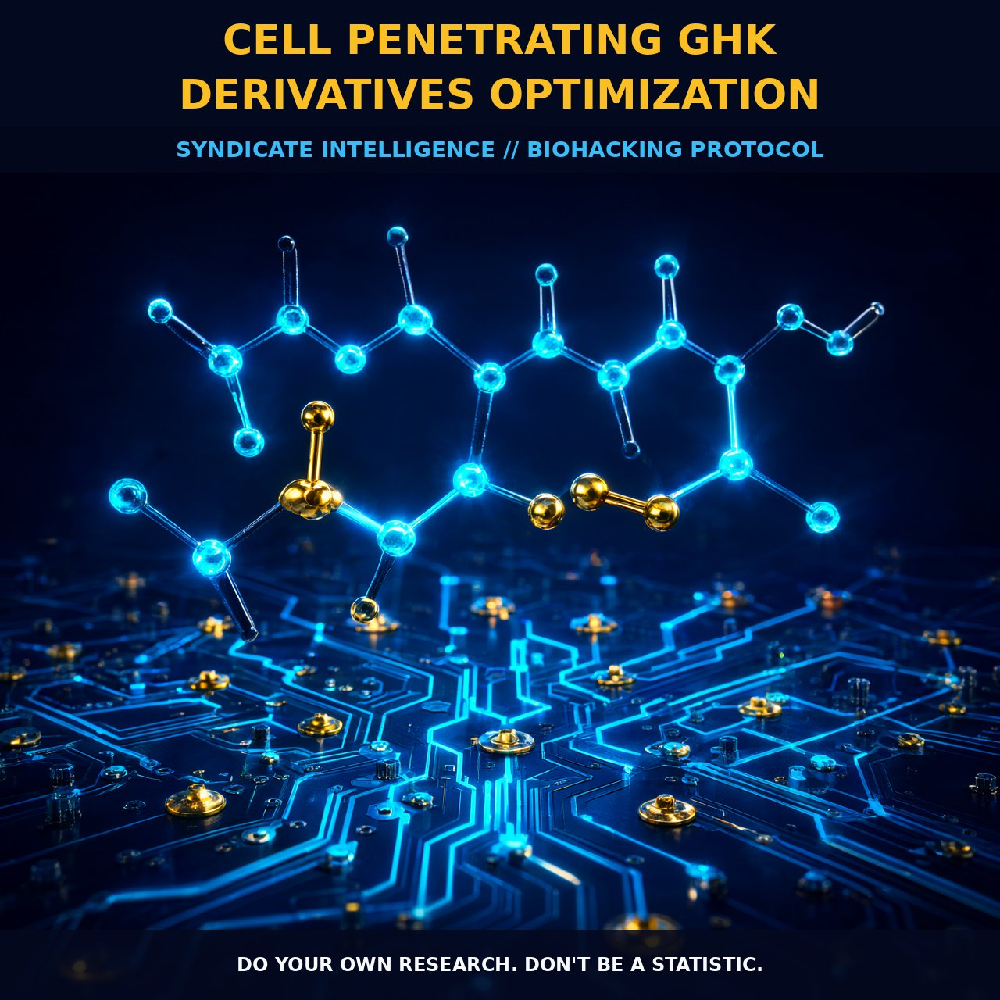

Optimizing GHK Derivatives for Enhanced Skin Regeneration

1. The Mechanism
GHK (glycyl-L-histidyl-L-lysine) is a naturally occurring tripeptide found in human plasma, saliva, and urine. It plays a pivotal role in wound healing and skin repair, particularly when complexed with copper 2+ (GHK-Cu). This complex and its palmitoylated derivative, Pal-GHK, have shown promising regenerative and protective actions in multiple cellular pathways. However, the hydrophilic and unstable nature of GHK poses a challenge to its permeability into the skin.
To enhance GHK's penetration, researchers have explored various methodologies such as microneedle pretreatment and the use of cell-penetrating peptides (CPPs). Microneedles create microchannels in the stratum corneum, facilitating the permeation of GHK-Cu over extended periods. A study published in Pharmaceutical Research demonstrated that microneedle pretreatment allowed for significant GHK-Cu permeation over 9 hours without skin irritation.
Cell-penetrating peptides are short peptides designed to enhance the cellular uptake and delivery of bioactive molecules, including GHK and its derivatives. By attaching a CPP to GHK, the permeability and effectiveness of the peptide can be significantly improved, ensuring that it reaches its target site of action efficiently.
2. Biological Leverage
GHK exerts its effects through various biological pathways, including the modulation of metalloproteinases, collagen synthesis, and glycosaminoglycan metabolism. It stimulates both the synthesis and breakdown of collagen and glycosaminoglycans, modulates the activity of metalloproteinases and their inhibitors, and attracts immune and endothelial cells to the site of injury, contributing to wound healing and skin regeneration.
Moreover, GHK has been shown to upregulate and downregulate numerous genes, effectively resetting DNA to a healthier state. This multifaceted action explains its diverse protective and healing properties, including enhanced angiogenesis and nerve outgrowth. By optimizing the delivery of GHK through cell-penetrating peptides and microneedle pretreatment, the biological leverage of these pathways can be maximized, providing enhanced wound healing and anti-aging benefits.
GHK has also been found to have powerful cell-protective actions, such as multiple anti-cancer activities, anti-inflammatory actions, and DNA repair capabilities. It can increase keratinocyte proliferation and reduce photodamage and hyperpigmentation. The optimization of GHK delivery methods, such as through cell-penetrating peptides and microneedles, can further enhance these biological actions, providing a comprehensive approach to skin regeneration and repair.
3. Tactical Implementation
To optimize the delivery of GHK derivatives, microneedle pretreatment and cell-penetrating peptides can be employed. Microneedles can be applied to the skin to create microchannels, enhancing the permeability of GHK-Cu. This method is safe and effective, as demonstrated in studies where significant amounts of GHK-Cu permeated through the skin without causing irritation. Applying GHK-Cu after microneedle pretreatment can maximize its effectiveness in skin regeneration and repair.
Cell-penetrating peptides can also be used to enhance the delivery of GHK and its derivatives. By attaching a CPP to GHK, the peptide can more efficiently penetrate the cell membrane and reach its target site of action. This approach not only improves the permeability of GHK but also ensures that it reaches the necessary biological pathways to exert its effects.
Dosage ranges for GHK-Cu and Pal-GHK are not well established in the literature. However, low-to-moderate amounts of GHK-Cu, combined with microneedle pretreatment, can be used topically to enhance skin permeation and effectiveness. When using cell-penetrating peptides, the specific dosage and application method should be determined based on the specific peptide and the desired biological effect.
In terms of stacking, GHK can be combined with other skin-regenerating compounds such as vitamin C, hyaluronic acid, and retinoids to enhance its overall efficacy. The timing of application is also crucial, as applying GHK-Cu and Pal-GHK after microneedle pretreatment or CPP enhancement can optimize its penetration and effectiveness.
Prostar Life Hack
Apply microneedle pretreatment to the skin before applying GHK-Cu or Pal-GHK to maximize its effectiveness in skin regeneration and repair.
[ AUTHOR: LEAD TECHNICAL RESEARCHER ]